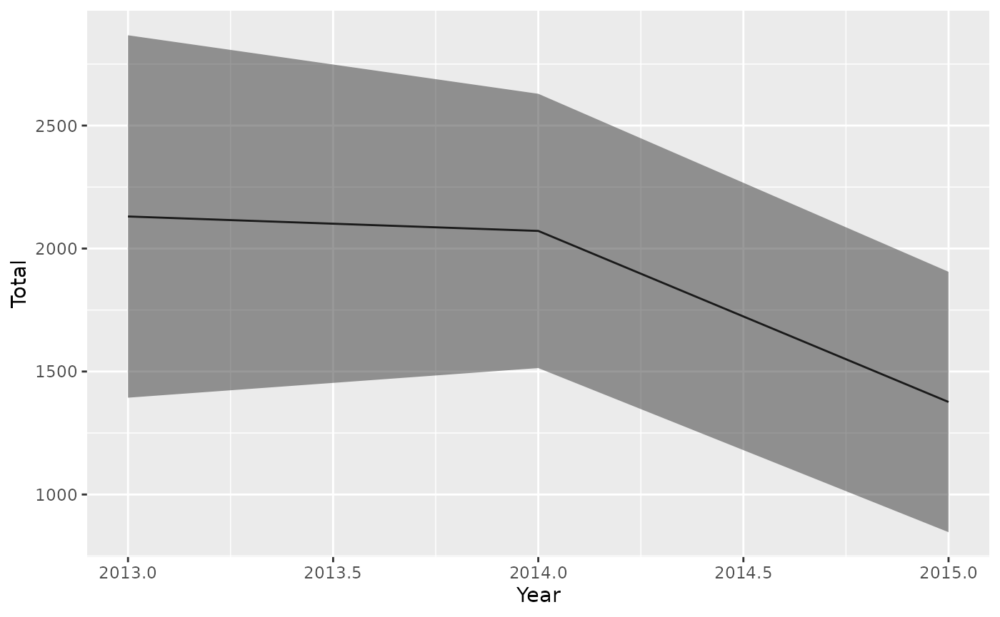

Material from 2025 ICCAT Training Course
Beth Babcock
2025-12-29
Course2025.RmdIntroduction and Agenda
This document includes the slides and R tutorials from the ICCAT BycatchEstimator training in Panama City, Panama in July, 2025. The slides and tutorials are listed in the order they were presented.
Tutorial 1. Introduction to the BycatchEstimator Tool
Install and load the library.
Start by loading the libraries, after installing them if needed. Note that BycatchEstimator will open all the other libraries it needs, including tidyverse. For more guidance, see here: https://ebabcock.github.io/BycatchEstimator/articles/InstallationGuide.html
#devtools::install_github("ebabcock/BycatchEstimator")
library(BycatchEstimator)
library(MuMIn)Look at format of the input data.
For bycatch estimation, there are two data sources, the observer data, which has one row per sample unit (sets or trips) and the logbook data. For CPUE standardization, only the observer data is needed.
The package includes some simulated longline observer data from LLSIM, and a toy example data set. This is the toy data:
summary(obsdatExample)## EW season Year sampled.sets
## Length:394 Min. :1.000 Min. :2009 Min. : 0.7347
## Class :character 1st Qu.:1.000 1st Qu.:2011 1st Qu.: 17.9600
## Mode :character Median :1.000 Median :2013 Median : 22.4808
## Mean :1.398 Mean :2013 Mean : 30.1655
## 3rd Qu.:2.000 3rd Qu.:2015 3rd Qu.: 46.4658
## Max. :2.000 Max. :2018 Max. :107.7441
## Catch
## Min. : 0.000
## 1st Qu.: 0.000
## Median : 0.000
## Mean : 1.109
## 3rd Qu.: 0.000
## Max. :33.000
dim(obsdatExample)## [1] 394 5This is trip by trip observer data from a benthic longline fishery. The variables we need are Catch, which is bycatch of a species, sampled.sets, which is the unit of effort, and the variables Year, EW and season, which will define the stratification for the design-based estimate and serve as predictor variables for the model-base estimates. CPUE would be in terms of Catch/sampled.sets.
The corresponding logbook data is here:
summary(logdatExample)## sets Year season EW
## Min. : 0.4343 Min. :2009 Min. :1.000 Length:7794
## 1st Qu.: 13.1870 1st Qu.:2011 1st Qu.:1.000 Class :character
## Median : 25.3512 Median :2013 Median :1.000 Mode :character
## Mean : 28.2885 Mean :2013 Mean :1.415
## 3rd Qu.: 38.4678 3rd Qu.:2016 3rd Qu.:2.000
## Max. :529.8817 Max. :2018 Max. :2.000
## trips
## Min. :1
## 1st Qu.:1
## Median :1
## Mean :1
## 3rd Qu.:1
## Max. :1
dim(logdatExample)## [1] 7794 5The logbook data must include all the effort for which bycatch estimates are needed (i.e.the whole fleet). This logbook data contains one row per trip, the same as the observer data. The logbook data could also be aggregated, with a column giving the sample size per row (here trips is 1 for all rows). The logbook data must include effort in the same units as the observer data (in this case sets), and the same predictor variables (in this case Year, EW, and season).
bycatchSetup
The first step in bycatch estimation is setup the input file and
review and verify the data. Notice that returned value from
bycatchSetup is assigned as an object that will be used in
subsequent steps for applying design-based estimators
(bycatchDesign) and model fitting
(bycatchFit). This step produces output that is saved to
the working directory for the user to review. The inputs to the
bycatchSetup function are explained in the help file. To
see what the function does:
?bycatchSetupThe help file explains all the inputs. Read through them to see what options there are. The User’s Guide goes into much more detail.
For now, let’s run the simulated example data. First set the working directory to where you want the outputs to be, for example:
# Commented out so it will not run, because every computer has a different path.
# setwd("~/Tutorials")Now copy and paste this example to the console or an R script and run it:
setupObj<-bycatchSetup(
obsdat = obsdatExample,
logdat = logdatExample,
yearVar = "Year",
obsEffort = "sampled.sets",
logEffort = "sets",
obsCatch = "Catch",
catchUnit = "number",
catchType = "catch",
logNum = NA,
sampleUnit = "trips",
factorVariables = c("Year","EW","season"),
numericVariables = NA,
EstimateBycatch = TRUE,
baseDir = getwd(),
runName = "Simulated",
runDescription = "Simulated example species",
common = "Simulated species",
sp = "Genus species",
reportType = "html"
)The tool has printed output files in the directory you specified with baseDir and a subdirectory named runName. In this example, it created the folder “OutputSimulated”, and inside that a subfolder named “Simltdspcscatch”, which is an abbreviation of the species common name and catch type. In the subfolder, you will find an html report with the results, and another subfolder named “Setup files”.
The html file called “SimltdspcscatchDataChecks.html” contains summary figures and tables showing the sample size and presence/absence of the bycatch species across levels of predictor variables, observer coverage levels, raw trends in CPUE, and a summary of the available data. It also indicates if there are missing data or NAs with warning messages at the top of the file. The tool also produced csv files inside the “bycatchSetup files” folder. These contain data summaries by Year and factor variables. For more information on these see Appendix in the User Guide.
At this point, if the fishery and/or the observer coverage is low, check to make sure that you have at least some positive observations in each year. If any year has no positive observations, the delta models will not work. This example has only 1 positive observation in each of the last two years (2017 and 2018), so it will not crash, but we can expect some models to perform badly. The last two columns of the data summary table (Table 2) are a ratio estimator that is unstratified (except by year) as a quick reality check on the expected magnitude of the total bycatch (columns “Cat” and “Cse”).
bycatchDesign
The bycatchDesign function generates design-based
estimates of total bycatch, e.g. using a stratified ratio estimator. You
don’t have to run this function if you are only using model-based
estimates (see below). The inputs to bycatchDesign are
explained in the help file:
?bycatchDesignYou can use this code:
bycatchDesign(
setupObj = setupObj,
designScenario = "withPooling",
designMethods = c("Ratio", "Delta"),
designVars = c("Year","season"),
designPooling = TRUE,
poolTypes=c("adjacent","all"),
pooledVar=c(NA,NA),
adjacentNum=c(1,NA),
minStrataUnit = 1
)The tool has now printed another html file named “SimltdspcscatchwithPoolingDesignResults.html”. The available estimator types are a stratified ratio estimator, and a stratified design-based delta-lognormal estimator. It also created the subfolder “Design files”, which contain csv files with summaries and a file with “withPooling” in the name, that gives some information about how much pooling was done. In this example, pooling was only requested if there was less than one sample unit (trip) and only to adjacent years and all season, which was not enough to eliminate the zero estimates in some strata (see SimltdspcscatchwithPoolingDesignStrata.csv). We will return to this later.
bycatchFit
The bycatchFit function does all the model-based
estimates.
?bycatchFitThis function has a few more specifications regarding setting up model variables, model selection (which information criterion to use), use of random effects, etc. This function uses the information criteria to find the best set of predictor variables for each kind of model listed in modelTry. It can also do cross validation if desired. It prints out the model based estimates, diagnostics, and selection criteria.
bycatchFit(
setupObj = setupObj,
modelScenario = "model1",
complexModel = formula(y~(Year+season)^2),
simpleModel = formula(y~Year),
indexModel = formula(y~Year),
modelTry = c("Delta-Lognormal","TMBnbinom2"),
randomEffects = NULL,
randomEffects2 = NULL,
selectCriteria = "BIC",
DoCrossValidation = TRUE,
CIval = 0.05,
VarCalc = "Simulate",
useParallel = TRUE,
nSims = 1000
)There will now be a html file named “Simltdspcscatchmodel1ModelResults.html” in the output directory that includes all the figures and plots. In addition, all the model outputs are printed to .csv files for later use inside the folder “Fit files”.
Tutorial 2. Data setup and data checks with the bycatchSetup function
This tutorial explains what outputs are produced after running bycatchSetup and how to interpret them (what to look out for in terms of potential issues with the data). First load the libraries:
# devtools::install_github("ebabcock/BycatchEstimator") #Make sure library is installed and up to date
library(BycatchEstimator)
library(MuMIn)
library(dplyr)
library(ggplot2)We will use simulated longline data from Phil Goodyear’s species distribution and longline fishery simulator. The data in both the logbook and observer data are at trip-by-trip. There is a variable called trip which can be used to match the sampled trips in the observer data to the corresponding trips in the logbook.
## # A tibble: 6 × 22
## ...1 trip Year month gear light fleet bait hook hooks sets SWO BUM
## <dbl> <chr> <dbl> <dbl> <dbl> <dbl> <dbl> <dbl> <dbl> <dbl> <dbl> <dbl> <dbl>
## 1 2 10.19… 1990 4 10 1 1 2 4 0.5 1 4 0
## 2 3 10.19… 1990 7 10 1 1 2 4 4.5 9 31 0
## 3 4 10.19… 1990 8 10 1 1 2 4 1.15 2 7 0
## 4 5 10.19… 1991 2 10 1 1 2 4 0.5 1 2 0
## 5 6 10.19… 1992 10 10 1 1 2 4 1.2 2 7 0
## 6 7 10.19… 1993 5 10 1 1 2 4 2.5 5 14 0
## # ℹ 9 more variables: lat5 <dbl>, lon5 <dbl>, lat <dbl>, lon <dbl>, hbf <dbl>,
## # habSWO <dbl>, habBUM <dbl>, season <dbl>, area <chr>## # A tibble: 6 × 25
## ...1 trip Year month gear light fleet bait hook hooks sets SWO BUM
## <dbl> <chr> <dbl> <dbl> <dbl> <dbl> <dbl> <dbl> <dbl> <dbl> <dbl> <dbl> <dbl>
## 1 1 1.200… 2009 4 1 1 1 2 1 2 4 14 0
## 2 51 10.19… 1990 1 10 1 1 2 4 0.5 1 2 0
## 3 52 10.19… 1990 1 10 1 1 2 4 1.5 3 4 0
## 4 53 10.19… 1990 1 10 1 1 2 4 1.5 3 8 0
## 5 54 10.19… 1990 10 10 1 1 2 4 0.516 1 5 0
## 6 55 10.19… 1990 10 10 1 1 2 4 3 6 19 0
## # ℹ 12 more variables: lat5 <dbl>, lon5 <dbl>, lat <dbl>, lon <dbl>, hbf <dbl>,
## # habSWO <dbl>, habBUM <dbl>, trip.05 <dbl>, trips <dbl>, season <dbl>,
## # area <chr>, unsampledEffort <dbl>Now let’s run bycatchSetup with the following arguments:
setupObj<-bycatchSetup(
obsdat = LLSIM_BUM_Example_observer,
logdat = LLSIM_BUM_Example_logbook,
yearVar = "Year",
obsEffort = "hooks",
logEffort = "hooks",
obsCatch = c("SWO","BUM")[2], # selecting Blue marlin catch
catchUnit = "number",
catchType = "catch",
logNum = NA,
sampleUnit = "trips",
factorVariables = c("area","fleet","season"),
numericVariables = c("Year","hbf"), ## add some numeric variables to show in plots
EstimateBycatch = TRUE,
baseDir = getwd(),
runName = "LLSIMBUMSetup",
runDescription = "LLSIm BUM",
common = c("Swordfish","Blue marlin")[2], # selecting Blue marlin
sp = c("Xiphias gladius","Makaira nigricans")[2] # selecting Blue marlin
)Have a look at the html file with the results “Blue marlin Data checks”. This output starts with a section that contains Data warnings. The tool will print out warnings if there are NAs in either observer or logbook data; if there are levels of factor variables present in the observer data but not in the logbook data (and vice-versa); and if the range of each numeric variable is not consistent between observer and logbook data (points more than 5% outside the range of values). Zero values of effort in the observer data also give a warning. This example has no warnings or errors.
Next there are Summary Tables. Table 1 shows a comparison of total sample units (trips or sets) and effort units between observer and logbook data, and the proportion of sample units and effort units. Table 2 gives a data summary for each year, including effort and sample units in both logbook and observer data, mean CPUE with standard error, number of outliers. For more details on each column see the Appendix in the User Guide. The columns “Cat” and “Cse” contain estimated catch using a unstratified ratio estimator and corresponding standard error.
The following section contains figures comparing observer vs. logbook effort, sample units and variables. These figures allow you to see if there any large discrepancies between observer and logbook data.
Figure 1: barplot of total effort comparison for each factor variable and corresponding factor levels
Figure 2: barplot of total number of trips for each factor variable and corresponding factor levels
Figure 3: total number of trips for each numeric variable (effort included)
Figure 4: diagonal shows histograms/density plot for each numeric variable, which represent the distribution of each variable; lower triangle shows scatterplots for each pair of variables, allowing to spot correlations or outliers; upper triangle shows correlation coefficients
Figure 5: diagonal shows frequency/counts for each factor level; lower and upper triangle shows mosaic plot for each pair of variables, where the size/area of each bar is proportional to the number of observations in each level
There are also barplots showing presence/absence of the bycatch species in the observer data by year and by level of categorical and numeric variables (Figures 6 - 8); total catch in the observer data by factor and numeric variables (Figures 9); catch per sample unit in observer data by factor and numeric variables (Figures 10 - 12); and catch per unit effort (CPUE) in observer data by factor and numeric variables, including the effort variable (Figures 14 - 16).
Model-based estimation methods work when there are non-zero catches across all levels of each variable. Numerical variables can introduce bias if the observed data does not include the full range of values in the whole fishery. Also, check for instances of very high CPUE. This may happen if a catch occurs in a set/trip with low recorded effort, and these outliers may bias the results.
Design-based estimates require observations in all strata. If there are any strata with no observations, consider pooling.
Tutorial 3. Design-based estimation with the bycatchDesign function
This tutorial gives some practice in working with design-based estimators, including different pooling methods, using the data sets included with the tool. First load the libraries:
# devtools::install_github("ebabcock/BycatchEstimator") #Make sure library is installed and up to date
library(BycatchEstimator)
library(MuMIn)
library(dplyr)
library(ggplot2)To understand how stratified estimators work, let’s stratify by year,
fleet and area (N vs. S Atlantic). The bycatch response variable is the
catch of blue marlin BUM and effort is in hooks. Run
first bycatchSetup for setting up the data, using the
simulated longline data:
setupObj<-bycatchSetup(
obsdat = LLSIM_BUM_Example_observer,
logdat = LLSIM_BUM_Example_logbook,
yearVar = "Year",
obsEffort = "hooks",
logEffort = "hooks",
obsCatch = c("SWO","BUM")[2], # selecting Blue marlin catch
catchUnit = "number",
catchType = "catch",
logNum = NA,
sampleUnit = "trips",
factorVariables = c("area","fleet","month","season"),
numericVariables = c("Year"),
EstimateBycatch = TRUE,
baseDir = getwd(),
runName = "LLSIMBUM",
runDescription = "LLSIMBUM",
common = c("Swordfish","Blue marlin")[2], # selecting Blue marlin
sp = c("Xiphias gladius","Makaira nigricans")[2] # selecting Blue marlin
)With no pooling
And then run bycatchDesign, first with no pooling:
bycatchDesign(
setupObj = setupObj,
designScenario = "NoPooling",
designMethods = c("Ratio", "Delta"),
designVars = c("Year","area","fleet"),
designPooling = FALSE
)You can have a look at the html file “Blue marlin catch Design-based
estimation results” with the results. Within the folder “bycatchDesign
files”, there is a file called “designStrata”, which summarizes the
design-based estimates by stratification variables. If you open the file
called designStrata, you can see that some strata have zero estimates.
This may mean that those combinations of the designVars Year,
season and area have effort in the logbooks, but are
not sampled by observers. You can also see these zero estimates in the
csv file “StrataSummary” produced in bycatchSetup. In here,
you see that in these strata, there is logbook effort but no observer
effort. We can resolve this by pooling. We need to add some more inputs
to define the pooling.
With pooling
bycatchDesign(
setupObj = setupObj,
designScenario = "Pool2", #update name
designMethods = c("Ratio", "Delta"),
designVars = c("Year","area","fleet"),
designPooling = TRUE, #Make this TRUE
poolTypes = c("adjacent","all","all"), #Pool by adjacent years, and all fleets or all areas
pooledVar = c("Year","area","fleet"), #Pool variables in this order
adjacentNum = c(2,NA,NA), #Pool 2 years before and after
minStrataUnit = 2, #Pool if there are 2 or fewer trips in a stratum
)In this example, we pooled by year, area and fleet, in that order. If a stratum had less than or equal to minStrataUnit=2 trips, we pooled with the two years before and after, for a total of 5 years. The file called “Pooling.csv” gives details on how the pooling worked in each stratum, this is also shown in a figure in designResults. The column poolnum gives the level of pooling, where 1 is just the first variable (Year), 2 is the second variable, etc. The column pooled.n give the sample size in the pool for that stratum, which can be the same as the observed n in the stratum, if n was above the minimum. For example, look at Year 1996, fleet 3, and area N.
pooling<-read.csv("OutputLLSIMBUM/Bluemarlincatch/Design files/BluemarlincatchPool2Pooling.csv")
head(pooling)## Year area fleet totalUnits totalEffort units effort pooled.n poolnum
## 1 1990 N 1 1445 5442.777 71 248.057 71 0
## 2 1990 N 2 787 27553.331 48 1514.269 48 0
## 3 1990 S 2 887 51579.501 41 2059.257 41 0
## 4 1990 S 3 99 5237.189 4 234.972 4 0
## 5 1991 N 1 1339 6007.066 63 311.781 63 0
## 6 1991 N 2 777 27417.542 33 953.047 33 0
## pooledTotalUnits pooledTotalEffort
## 1 1445 5442.777
## 2 787 27553.331
## 3 887 51579.501
## 4 99 5237.189
## 5 1339 6007.066
## 6 777 27417.542
pooling%>%
mutate(Pooling=as.character(poolnum)) %>%
mutate(Pooling=ifelse(is.na(Pooling),paste0(">",max(poolnum,na.rm=TRUE)),Pooling))%>%
ggplot()+
geom_bar(aes(x=Year,fill=Pooling))+
ggtitle("Count of strata per year with number of dimensions pooled")
## Year area fleet totalUnits totalEffort units effort pooled.n poolnum
## 1 1996 N 3 16 716.070 2 56.745 6 1
## 2 1997 N 3 23 618.744 3 72.905 3 0
## 3 1998 N 3 32 1048.560 1 43.460 16 1
## 4 1999 N 3 77 2462.130 4 30.343 4 0
## 5 2000 N 3 106 3446.658 6 182.930 6 0
## pooledTotalUnits pooledTotalEffort
## 1 71 2383.374
## 2 23 618.744
## 3 254 8292.162
## 4 77 2462.130
## 5 106 3446.658You can see that years 1996 and 1998 both needed to be pooled (units of 2 or less). There was no effort in 1994 or 1995 in this area and fleet. So the pool for year 1996 was 1996 to 1997, which gave a pooled sample size (pooled.n) of 2+3+1=6. This was above minStrataUnit, so that pool was sufficient and poolnum was one, meaning no further pooling. Does the pooled.n value for 1998 make sense?
Let’s look at a stratum that needed more pooling.
## Year area fleet totalUnits totalEffort units effort pooled.n poolnum
## 1 2002 N 1 919 6151.136 51 310.138 51 0
## 2 2002 S 1 17 60.102 0 0.000 4 1
## 3 2003 N 1 899 6195.748 40 240.244 40 0
## 4 2003 S 1 9 48.480 1 6.480 3 1
## 5 2004 N 1 935 6470.181 53 347.879 53 0
## 6 2004 S 1 5 16.000 0 0.000 226 2
## 7 2005 N 1 825 5319.083 39 291.849 39 0
## 8 2006 N 1 825 5160.586 42 298.967 42 0
## pooledTotalUnits pooledTotalEffort
## 1 919 6151.136
## 2 63 286.179
## 3 899 6195.748
## 4 50 234.780
## 5 935 6470.181
## 6 4434 29421.316
## 7 825 5319.083
## 8 825 5160.586This fleet had one trip in the area in 2003, and zero in 2002 and 2004, so combining years did not give enough trips for a pool for the 2004 estimate. So, poolnum is 2, and the pooled.n includes all areas for that fleet in that year.
## [1] 226The html file shows what fraction of the strata are pooled to each level as a diagnostic that the pooling works as intended (last figure).
With pooling and a higher minimum catch threshold
Now try the pooling for a higher minimum number of observed trips:
bycatchDesign(
setupObj = setupObj,
designScenario = "Pool5", #update name
designMethods = c("Ratio", "Delta"),
designVars = c("Year","area","fleet"),
designPooling = TRUE,
poolTypes = c("adjacent","all","all"),
pooledVar = c("Year","area","fleet"),
adjacentNum = c(2,NA,NA),
minStrataUnit = 5 #Pool if there are 5 or fewer trips in a stratum
)
pooling<-read.csv("OutputLLSIMBUM/Bluemarlincatch/Design files/BluemarlincatchPool5Pooling.csv")
pooling%>%
mutate(Pooling=as.character(poolnum)) %>%
mutate(Pooling=ifelse(is.na(Pooling),paste0(">",max(poolnum,na.rm=TRUE)),Pooling))%>%
ggplot()+
geom_bar(aes(x=Year,fill=Pooling))+
ggtitle("Count of strata per year with number of dimensions pooled")
You can compare the last plot in the html file with the previous results when pooling with minStrataUnit=2.
Another option for pooling is to add another column to the data that is a more aggregated variable to use when the original data doesn’t meet the minimum sample size requirement. For example, if the strata were months, the variable to pool on (if needed) could be season. Let’s try that.
bycatchDesign(
setupObj = setupObj,
designScenario = "PoolMonth", #update name
designMethods = c("Ratio", "Delta"),
designVars = c("Year","area","fleet", "month"), #added month as design variable
designPooling = TRUE,
poolTypes = c("adjacent","all","all","pooledVar"),
pooledVar = c("Year","area","fleet","season"),
adjacentNum = c(2,NA,NA,NA),
minStrataUnit = 5
)
pooling<-read.csv("OutputLLSIMBUM/Bluemarlincatch/Design files/BluemarlincatchPoolMonthPooling.csv")
pooling%>%
mutate(Pooling=as.character(poolnum)) %>%
mutate(Pooling=ifelse(is.na(Pooling),paste0(">",max(poolnum,na.rm=TRUE)),Pooling))%>%
ggplot()+
geom_bar(aes(x=Year,fill=Pooling))+
ggtitle("Count of strata per year with number of dimensions pooled")
This stratification scheme requires pooling for nearly all the strata. It still works, but the resulting estimates will be somewhat smoothed by the pooling process.
Tutorial 4: Model fitting, model selection and diagnostics with bycatchFit
This tutorial will run the model fit function and then evaluate model selection and diagnostics, including:
- Checking that the model was able to fit at all and using cross-validation to compare the best model in each group.
- Selecting predictor variables using information criteria within each group of models.
- Checking model diagnostics, such as quantile residuals.
- Comparing bycatch predictions from the best model in each group.
- Choosing the best model.
# devtools::install_github("ebabcock/BycatchEstimator") #Make sure library is installed
library(BycatchEstimator)
library(MuMIn)
library(tidyverse)
library(flextable)Model fitting and model selection can be slow. So, for the purposes of this demonstration, we will limit the data to a 5 year period so it will run faster.
obsdatTest<-filter(LLSIM_BUM_Example_observer,Year %in% 2011:2015)
logdatTest<-filter(LLSIM_BUM_Example_logbook,Year %in% 2011:2015)To try multiple models, we define them in modelTry in
bycatchFit. The input modelTry is the list of model types
to fit and possibly compare with cross-validation. These are explained
in the bycatchFit help file. If the model type starts with
TMB, it will be fit in Template Model Builder using the glmmTMB library,
otherwise they are fit using other R libraries, including ordinary lm or
glm. Results for Tweedie vs. TMBtweedie, or NegBin vs. TMBnbinom2 should
be identical.
The inputs complexModel and simpleModel give the range of models to be evaluated with information criteria in each model group. The simpleModel should not include any interactions.
First run again bycatchSetup with the 5 years of
data:
setupObj<-bycatchSetup(
obsdat = obsdatTest,
logdat = logdatTest,
yearVar = "Year",
obsEffort = "hooks",
logEffort = "hooks",
obsCatch = c("SWO","BUM")[2], # selecting Blue marlin catch
catchUnit = "number",
catchType = "catch",
logNum = NA,
sampleUnit = "trips",
factorVariables = c("season","area","fleet"),
numericVariables = c("Year"),
EstimateBycatch = TRUE,
baseDir = getwd(),
runName = "LLSIMBUMModel1",
runDescription = "LLSIm BUM with model comparison",
common = c("Swordfish","Blue marlin")[2], # selecting Blue marlin
sp = c("Xiphias gladius","Makaira nigricans")[2] # selecting Blue marlin
)Now run bycatchFit. The input setupObj is the output
from bycatchSetup. The selectCriteria will be used to
select the best combination of predictor variables. This may be any of
the criteria for ranking models in the MuMIn dredge function. Bayesian
information criterion (BIC) works well.
bycatchFit(
setupObj = setupObj,
modelScenario = "scen1",
complexModel = formula(y~Year+season+area+fleet +area:season), #upper range of models to compare with information criteria,
simpleModel = formula(y~Year), #lower range of models to compare,
indexModel = formula(y~Year),
modelTry = c("TMBdelta-Lognormal","TMBnbinom1","NegBin","TMBnbinom2","TMBtweedie"), #model types to compare
randomEffects = NULL,
randomEffects2 = NULL,
selectCriteria = "BIC",
DoCrossValidation = TRUE,
CIval = 0.05,
VarCalc = "DeltaMethod",
useParallel = TRUE,
nSims = 100
)As the model is running, it prints out some text about how the models are being selected, which you can ignore. It is done when it says “1 Blue marlin complete” along with the time. Tables and figures are all printed to an html file called “Bluemarlincatchscen1Modelresults”, along with .csv files with all the data for all the figures and tables inside the folder “Fit files”.
The first section of the html output gives a review of the input
settings for model-based estimation (arguments defined in
bycatchFit). The second section gives the results of model
comparison.
Table 1 shows if the models were able to fit and summary results of cross-validation that compared the best model across groups in terms of their ability to predict CPUE. The best model was defined has having lowest RMSE (root mean squared error) and ME (mean error) closest to zero. For delta models, like delta-lognormal, both the binomial and lognormal models are used together to predict CPUE, so the binomial model doesn’t have it’s own value in the table. The last column “Failure” checks if models were able to fit (this is shown only in the html version of Table 1). It will have a dash if the model was able to fit successfully. If the model was not able to fit, there will be a word saying the model failed due to “data” (meaning that that the model was not able to fit the delta models due to all zero all all non-zero observations), “fit” (meaning the model never converged) or “CV” (meaning predicted CVs were too large).
crossval<-read.csv("OutputLLSIMBUMM1/Bluemarlincatch/Fit files/scen1crossvalSummary.csv")
crossval %>%
mutate_if(is.numeric,round,digits=4) %>%
flextable()X |
model |
formula |
RMSE |
ME |
|---|---|---|---|---|
1 |
TMBbinomial |
area + fleet + 1 + Year |
||
2 |
TMBdelta-Lognormal |
area + fleet + 1 + Year |
0.0673 |
-0.0012 |
3 |
TMBnbinom1 |
area + fleet + 1 + Year + offset(log(Effort)) |
0.0673 |
0.0040 |
4 |
NegBin |
area + fleet + 1 + Year + offset(log(Effort)) |
0.0668 |
0.0012 |
5 |
TMBnbinom2 |
area + fleet + 1 + Year + offset(log(Effort)) |
0.0668 |
0.0012 |
6 |
TMBtweedie |
area + fleet + 1 + Year |
0.0734 |
0.0011 |
Figure 2 in the html file shows boxplots of RMSE and ME across 10 folds of the cross validation. The RMSE and ME values are very similar between models but the delta-lognormal has the lowest RMSE. The csv files called “scen1rmse.csv” and “scen1me.csv” have the numbers to recreate these figures.
rmse<-read.csv("OutputLLSIMBUMM1/Bluemarlincatch/Fit files/scen1rmse.csv") %>%
pivot_longer(TMBdelta.Lognormal:TMBtweedie, names_to="Model", values_to="RMSE")
ggplot(rmse,aes(x=Model,y=RMSE)) + geom_boxplot()
me<-read.csv("OutputLLSIMBUMM1/Bluemarlincatch/Fit files/scen1me.csv") %>%
pivot_longer(TMBdelta.Lognormal:TMBtweedie, names_to="Model", values_to="ME")
ggplot(me,aes(x=Model,y=ME)) + geom_boxplot()
Table 2 gives a summary of model diagnostics. The diagnostics include a test of whether the quantile residuals are uniformly distributed (KS), an overdispersion test, a zero inflation test and an outlier test. In all cases, signficant P values indicate potential problems. As usual with hypothesis tests like this, the Null hypothesis is that the data do not have the problem, so that larger datasets are more likely to find significant P values. At the same time, larger datasets are more robust to minor violations of model assumptions. In this case, negative binomal 2/NegBin and delta lognormal pass all the tests, and negative binomial 1 and Tweedie have some failures.
diagnostics_summary<-read.csv("OutputLLSIMBUMM1/Bluemarlincatch/Fit files/scen1modelSummary.csv")
diagnostics_summary %>%
mutate_if(is.numeric,round,digits=4) %>%
flextable()X |
TMBbinomial |
TMBdelta.Lognormal |
TMBnbinom1 |
NegBin |
TMBnbinom2 |
TMBtweedie |
|---|---|---|---|---|---|---|
KS.D |
0.0540 |
0.0709 |
0.0590 |
0.0458 |
0.0279 |
0.0568 |
KS.p |
0.3783 |
0.8282 |
0.2759 |
0.5894 |
0.9798 |
0.3190 |
Dispersion.ratio |
1.0088 |
1.0106 |
1.5408 |
0.9058 |
0.9983 |
1.9923 |
Dispersion.p |
0.9280 |
0.8880 |
0.0560 |
0.6800 |
0.6800 |
0.0000 |
ZeroInf.ratio |
0.9984 |
1.0119 |
1.0355 |
1.0323 |
0.9981 |
|
ZeroInf.p |
1.0000 |
1.0000 |
0.7840 |
0.3040 |
0.3120 |
0.9440 |
Outlier |
0.0000 |
1.0000 |
1.0000 |
2.0000 |
1.0000 |
3.0000 |
Outlier.p |
1.0000 |
0.4642 |
1.0000 |
0.3800 |
1.0000 |
0.4975 |
Table 3 provides parameter values from the fitted models, together with the likelihood and residuals degrees of freedom.
Figure 1 shows a time series of the total bycatch estimates from all valid models, with a 95% confidence interval calculated by the chosen variance calculation method. If no variance is calculated, there will be no confidence interval shown. If any models are very different from the others, that may indicate that not all models are consistent with the data.
The third section of the html output gives results for each model type. The tables in this section show model selection tables that select predictor variables using information criteria within each model type listed in modelTry. Previously in Table 1, it was shown the formula for the BIC best model in each model type. Model selection tables give the information criteria for the models, sorted from best to worst, along with model weights calculated from the informatrion criterion selected (BIC). The r-squared values are also shown. If there were two models with similar weight, both might be viable.
For example, for the Negative Binomial model (NegBin), the best model includes area, fleet and year. We can see the ranking of other models in the file labelled “modelSelectionNegbin.csv”.
negBinSel<-read.csv("OutputLLSIMBUMM1/Bluemarlincatch/Fit files/Bluemarlincatchscen1ModelSelectionNegBin.csv")
negBinSel %>%
dplyr::select(!offset.log.Effort..)%>%
mutate_if(is.numeric,round,digits=2) %>%
flextable()X.Intercept. |
area |
fleet |
season |
Year |
area.season |
AICc |
AIC |
BIC |
df |
logLik |
selectCriteria |
delta |
weight |
R2 |
|---|---|---|---|---|---|---|---|---|---|---|---|---|---|---|
-3.98 |
+ |
+ |
-0.09 |
513.36 |
513.06 |
534.95 |
6 |
-250.53 |
534.95 |
0.00 |
1 |
0.14 |
||
-3.60 |
+ |
+ |
+ |
-0.15 |
513.81 |
513.15 |
545.99 |
9 |
-247.57 |
545.99 |
11.04 |
0 |
0.18 |
|
-3.10 |
+ |
-0.14 |
536.66 |
536.52 |
551.11 |
4 |
-264.26 |
551.11 |
16.16 |
0 |
0.06 |
|||
-3.38 |
-0.16 |
544.55 |
544.46 |
555.41 |
3 |
-269.23 |
555.41 |
20.46 |
0 |
0.01 |
||||
-3.92 |
+ |
+ |
+ |
-0.19 |
+ |
512.89 |
511.74 |
555.53 |
12 |
-243.87 |
555.53 |
20.58 |
0 |
0.23 |
-3.95 |
+ |
-0.15 |
541.76 |
541.55 |
559.79 |
5 |
-265.77 |
559.79 |
24.84 |
0 |
0.06 |
|||
-2.75 |
+ |
+ |
-0.20 |
535.64 |
535.23 |
560.77 |
7 |
-260.62 |
560.77 |
25.82 |
0 |
0.10 |
||
-3.02 |
+ |
-0.22 |
543.48 |
543.17 |
565.07 |
6 |
-265.59 |
565.07 |
30.11 |
0 |
0.05 |
|||
-3.53 |
+ |
+ |
-0.21 |
541.19 |
540.66 |
569.86 |
8 |
-262.33 |
569.86 |
34.90 |
0 |
0.11 |
||
-2.87 |
+ |
+ |
-0.23 |
+ |
539.48 |
538.68 |
575.17 |
10 |
-259.34 |
575.17 |
40.21 |
0 |
0.12 |
The html output has a four panel residual plot for each model type (example Figure 3 that shows residuals for TMBbinomial). The four panels are: (a) ordinary residuals, i.e plotting against , (b) the qqnormal plot of the ordinary residuals, (c) a qquniform plot of the quantile residuals, and (d) quantile residuals against model predictions. Part c and d are the plots generated by the DHARMa library. The residuals are calculated by simulating data from the defined model and likelihood function and calculating the quantile calculated from each data point. If the model is adequately specified, the scaled residuals should be uniformly distributed between 0 and 1. This will be seen in all the points following the line in the qq plot, and all the median, 25th and 75th percentiles (red lines in d are a smooth) being horizontal and in the right place. The ordinary residuals are only appropriate for normal or lognormal models. For models with complex variance functions or integer responses (binomial and negative binomial) the quantile residuals are more appropriate.
The next figures shows observed vs predicted values for each model type, with a correlation test p-value and a smoothed trend line (example Figures 5, 8, 11, 14).
The last figure for each model type are the bycatch predictions from the best model in each model type. These are also saved as csv files labelled “AnnualSummary”.
ResultsNegBin<-read.csv("OutputLLSIMBUMM1/Bluemarlincatch/Fit files/Bluemarlincatchscen1NegBinAnnualSummary.csv")
ggplot(ResultsNegBin,aes(x=Year,y=Total,ymin=TotalLCI,ymax=TotalUCI))+
geom_line()+
geom_ribbon(alpha=0.5)
Choosing the best model: it is not possible to completely automate the problem of model selection. In this case, all models performed very similarly in cross validation, and the DIC preferred the same combination of predictor variables for all models. The models produced quite similar results, so choosing any one of them would be a reasonable choice.
Tutorial 5. CPUE Standardization with bycatchFit
Although the BycatchEstimator package was originally developed for bycatch estimation, it can also produce a CPUE index of abundance. For this exercise we will turn off bycatch estimation. We will use the LLSIM blue marlin data. The following models will show how to:
Compare model types.
Add random effects
Add more variables.
# devtools::install_github("ebabcock/BycatchEstimator") #Make sure library is installed
library(BycatchEstimator)
library(MuMIn)
library(tidyverse)Model fitting and model selection can be slow. So, for the purposes of this demonstration, we will limit the data to a 15 year period so it will run faster.
obsdatTest<-filter(LLSIM_BUM_Example_observer,Year %in% 2001:2015)
logdatTest<-filter(LLSIM_BUM_Example_logbook,Year %in% 2001:2015)1. Compare model types.
To set up the model for index estimation only, the argument
EstimateBycatch can be FALSE in bycatchSetup, if there is
no logbook data to be included. Note that all variables to be included
in the CPUE standardization must be included in numericVariables or
factorVariables:
setupObj<-bycatchSetup(
obsdat = obsdatTest,
logdat = NULL, #no logbook data
yearVar = "Year",
obsEffort = "hooks",
logEffort = "hooks",
obsCatch = "BUM",
catchUnit = "number",
catchType = "catch",
logNum = NA,
sampleUnit = "trips",
factorVariables = c("Year","season","area","fleet"),
numericVariables = NA,
EstimateBycatch = FALSE, # no bycatch estimation
baseDir = getwd(),
runName = "LLSIMBUMCPUE1",
runDescription = "LLSIm BUM CPUE",
common = "Blue marlin",
sp = "Makaira nigricans",
reportType="html"
)In bycatchFit, set the EstimateIndex argument to TRUE.
The formula in indexModel gives the variables to be kept separate in the
index. This will always include Year. If you need separate indices by
fleet or area, include them here. Note that the best model in between
simpleModel and complexModel will be used to generate the index, and
this may have different variables. Generally, the index will be
calculated at the mean value of any numerical predictor variables, and
at the most common level of any factors. If a variable, such as area, is
included in indexModel but not in the selected best model according to
the information criteria, the areas will all have the same index:
bycatchFit(
setupObj,
modelScenario = "scen1",
complexModel = formula(y~Year+season+area+fleet+area:season), #upper range of models to compare with information criteria,
simpleModel = formula(y~Year), #lower range of models to compare,
indexModel = formula(y~Year+area), #Variables to include in index
modelTry = c("TMBdelta-Lognormal","TMBdelta-Gamma","TMBnbinom2","TMBtweedie"), #model types to compare
randomEffects = NULL,
randomEffects2 = NULL,
selectCriteria = "BIC",
DoCrossValidation = TRUE,
CIval = 0.05,
VarCalc = NULL, #Index standardaization doesn't use this
EstimateIndex = TRUE, # index estimation
useParallel = TRUE,
nSims = 100,
reportType = "html"
)Now, looking at the html output, there will be no total bycatch estimates, but there will be abundance indices plotted, plus and minus a standard error. The results are also in a .csv file.
nbinom2Index<-read.csv("OutputLLSIMBUMCP/Bluemarlincatch/Fit files/Bluemarlincatchscen1TMBnbinom2Index.csv")
ggplot(nbinom2Index,aes(x=Year,y=Index,ymin=lowerCI
,ymax=upperCI))+
geom_line()+
geom_ribbon(alpha=0.3)+
facet_wrap(area~.)We can see that all the models have similar diagnostics, but imply somewhat different trends.
2. Add random effects
CPUE standardization models commonly include random effects, for example to handle interactions between Year and other variables. It is also worthwhile to include fishing vessel as a random effect when using sets as a sample unit, to deal with the grouping in the data. Let’s try Year:area as a random effect. Of course, random effects can also be used for bycatch estimation, but this is less commonly done. If random effects are included, they will be automatically included in all models. randomEffects is the list of random effects to include in the model. For delta models, randomEffects2 can be used to give a different set of randomEffects for the two model components.
bycatchFit(
setupObj,
modelScenario = "s2randomeff",
complexModel = formula(y~Year+season+area+fleet+area:season), #upper range of models to compare with information criteria,
simpleModel = formula(y~Year), #lower range of models to compare,
indexModel = formula(y~Year+area), #Variables to include in index
modelTry = c("TMBdelta-Lognormal","TMBdelta-Gamma","TMBnbinom2","TMBtweedie"), #model types to compare
randomEffects = c("Year:area"),
randomEffects2 = c("Year:area"),
selectCriteria = "BIC",
DoCrossValidation = TRUE,
CIval = 0.05,
VarCalc = "DeltaMethod",
EstimateIndex = TRUE, # index estimation
useParallel = TRUE,
nSims = 100,
reportType = "html"
)3. Add more variables.
For CPUE standardization, it may be desirable to add more variables, such as gear variables and environmental variables. Numerical variables will be set to their mean for the prediction. Here we add two numerical variables (hbf and habBUM) and more factors (light).
setupObj<-bycatchSetup(
obsdat = obsdatTest,
logdat = logdatTest, #no logbook data
yearVar = "Year",
obsEffort = "hooks",
logEffort = "hooks",
obsCatch = "BUM",
catchUnit = "number",
catchType = "catch",
logNum = NA,
sampleUnit = "trips",
factorVariables = c("Year","season","area","light","fleet"),
numericVariables = c("hbf","habBUM"),
EstimateBycatch = TRUE, # no bycatch estimation
baseDir = getwd(),
runName = "LLSIMBUMCPUE3",
runDescription = "LLSIm BUM CPUE more variables",
common = "Blue marlin",
sp = "Makaira nigricans"
)
bycatchFit(
setupObj,
modelScenario = "morevar",
complexModel = formula(y~Year+season+area+fleet+light+hbf+habBUM), #upper range of models to compare with information criteria,
simpleModel = formula(y~Year), #lower range of models to compare,
indexModel = formula(y~Year+area), #Variables to include in index
modelTry = c("TMBdelta-Lognormal","TMBdelta-Gamma","TMBnbinom2","TMBtweedie"), #model types to compare
randomEffects = NULL,
randomEffects2 = NULL,
selectCriteria = "BIC",
DoCrossValidation = TRUE,
CIval = 0.05,
VarCalc = "DeltaMethod",
EstimateIndex = TRUE, # index estimation
useParallel = TRUE,
nSims = 100,
reportType = "html"
)In this case the trends differ somewhat, perhaps in part because the IC selected different predictor variables for different models.
Tutorial 6. Advanced and specialized model features with bycatchFit
This tutorial has some advanced and specialized methods:
Running more than one species at once.
Matching trips to estimate bycatch in unsampled effort only.
Making year a number, polynomial regression on year, or leaving year out of the model.
Validation data.
Reading in the R objects with .rds files
# devtools::install_github("ebabcock/BycatchEstimator") #Make sure library is installed
library(BycatchEstimator)
library(MuMIn)
library(tidyverse)
obsdatTest<-filter(LLSIM_BUM_Example_observer,Year %in% 2011:2015)
logdatTest<-filter(LLSIM_BUM_Example_logbook,Year %in% 2011:2015)a. Running more than one species at once.
To run multiple species or catch types (e.g. bycatch vs. catch) at once, all species must have their own column in the observer data. The inputs common, sp, obsCatch, and catchType will be vectors to run multiple species or catch types. All these vectors must have the same length. Running multiple species together only works if you want to use the same variables and model set up for each species. The information criteria and cross validation may select different models for each species.
We will run both blue marlin and swordfish together.
setupObj<-bycatchSetup(
obsdat = obsdatTest,
logdat = logdatTest,
yearVar = "Year",
obsEffort = "hooks",
logEffort = "hooks",
obsCatch = c("SWO","BUM"), #Column name vector
catchUnit = "number", #Will be replicated if one number is given
catchType = "catch", #Will be replicated if one number is given
logNum = NA,
sampleUnit = "trips",
factorVariables = c("area","fleet"),
numericVariables = c("Year"),
EstimateBycatch = TRUE,
baseDir = getwd(),
runName = "LLSIMBUMSWO",
runDescription = "LLSIm blue marlin and swordfish",
common = c("Swordfish","Blue marlin"), #common name vector
sp = c("Xiphias gladius","Makaira nigricans") #scientific name vector
)There are now folders for each species inside the output folder labelled “OutputLLSIMBUMSWO”. Inside the folders for each species you will find the html output with the data checks. Now copy and paste the following code to the console:
bycatchFit(
setupObj,
modelScenario = "multispp",
modelTry = c("TMBdelta-Lognormal","TMBnbinom2"), #model types to compare
complexModel = formula(y~Year+area+fleet),
simpleModel = formula(y~Year),
selectCriteria = "BIC",
DoCrossValidation = TRUE,
CIval = 0.05,
VarCalc = "none",
useParallel = TRUE,
nSims = 100
)The model runs a loop with the two species, so you will see a notification when each species finishes. This might take some time. All the results are in separate folders for each species.
b. Matching trips to estimate bycatch for unsampled effort
If it is possible to match individual trips in the observer and logbook data, and the observed effort is less than the total effort, you can predict only unobserved effort. If observers include only part of the effort in a trip, the data can include both observed and unobserved effort. For the LLSIM data, the matching variable is the trip ID. You must now specify, includeObsCatch, and matchColumn. The code will calculate the unsampled effort in each trip as the logbook effort minus the observed effort. This must be non-zero (i.e. logbook effort equal to or greater than observed effort). All trips from obsdat must match trips in logdat. Let’s re-run bycatchSetup with only one species, then run bycatchFit
setupObj<-bycatchSetup(
obsdat = obsdatTest,
logdat = logdatTest,
yearVar = "Year",
obsEffort = "hooks",
logEffort = "hooks",
obsCatch = c("SWO","BUM")[2], #choosing only one species
catchUnit = "number",
catchType = "catch",
logNum = NA,
sampleUnit = "trips",
factorVariables = c("area","fleet"),
numericVariables = c("Year"),
EstimateBycatch = TRUE,
baseDir = getwd(),
runName = "LLSIMBUM",
runDescription = "LLSIMBUM",
common = c("Swordfish","Blue marlin")[2], #choosing only one species
sp = c("Xiphias gladius","Makaira nigricans")[2] #choosing only one species
)
bycatchFit(
setupObj,
modelScenario = "matchtrips",
modelTry = c("TMBdelta-Lognormal","TMBnbinom2"),
complexModel = formula(y~Year+area+fleet),
simpleModel = formula(y~Year),
selectCriteria = "BIC",
DoCrossValidation = TRUE,
CIval = 0.05,
VarCalc = "DeltaMethod",
includeObsCatch = TRUE, #True to include observed catch as a constant
matchColumn = "trip", #Must have the same name in obsdat and logdat
useParallel = TRUE,
nSims = 100
)The tool will produce warning messages if there are observer trips missing in the logbook data, and if there are negative values in the calculated observed effort. The variance of the estimated total bycatch when matching trips is now slightly lower. However, with an observer coverage of only 5% there isn’t much difference.
c. Making year a number, polynomial regression, pooling years in the model
When there are too few observations in each year to estimate an independent year effect, it may be desirable to make year a number rather than a factor. If Year is listed in numericVariables, then the model y~Year is a linear regression with year. It also works to put in year squared and year cubed terms, e.g. y~Year+area+fleet+I(Year2)+I(Year3), and let the information criteria select the best model. This allows for fitting trends with complex shapes, but estimating a smaller number of parameters. The R function I() is needed for calculations inside an R formula, such as squaring, so the code understands it correctly.
# The code automatically converts variables listed in numericVariables to numeric, but you can also do that yourself, with this R code
obsdatTest$Year<-as.numeric(as.character(obsdatTest$Year))
logdatTest$Year<-as.numeric(as.character(logdatTest$Year))
#Year must be in numericVariables in setupObj
bycatchFit(
setupObj,
modelScenario = "numYear",
modelTry = c("TMBdelta-Lognormal","TMBnbinom2"),
complexModel = formula(y~Year+area+fleet+I(Year^2)+I(Year^3)), #Year is still in formula, now with polynomial
simpleModel = formula(y~Year),
selectCriteria = "BIC",
DoCrossValidation = TRUE,
CIval = 0.05,
VarCalc = "DeltaMethod",
useParallel = TRUE,
nSims = 100
)In this case, the information criteria included a squared term.
Resultsnbinom<-read.csv("OutputLLSIMBUM/Bluemarlincatch/Fit files/BluemarlincatchnumYearTMBnbinom2AnnualSummary.csv")
ggplot(Resultsnbinom,aes(x=Year,y=Total,ymin=TotalLCI,ymax=TotalUCI))+
geom_line()+
geom_ribbon(alpha=0.5)Another method that might be useful for bycatch estimation with small sample sizes is to not include year in the model. The estimates will still be annual, but the model doesn’t necessarily need to include year. The following tests a two year time block, and also allows the model to estimate a null model by setting simpleModel=formula(y~1).
#Make new variable for the 2 year time block
obsdatTest$Year2<-2*trunc(obsdatTest$Year/2)
logdatTest$Year2<-2*trunc(logdatTest$Year/2)
setupObj<-bycatchSetup(
obsdat = obsdatTest,
logdat = logdatTest,
yearVar = "Year", #Keep year in the inputs because effort will be expanded by year
obsEffort = "hooks",
logEffort = "hooks",
obsCatch = c("SWO","BUM")[2], #choosing only one species
catchUnit = "number",
catchType = "catch",
logNum = NA,
sampleUnit = "trips",
factorVariables = c("Year","Year2","area","fleet"), #Two year time blocks now used as a variable. Include Year as a factor although it is not used in the models
numericVariables = NA,
EstimateBycatch = TRUE,
baseDir = getwd(),
runName = "LLSIMBUM2year",
runDescription = "LLSIMBUM 2 year blocks",
common = c("Swordfish","Blue marlin")[2], #choosing only one species
sp = c("Xiphias gladius","Makaira nigricans")[2] #choosing only one species
)
bycatchFit(
setupObj,
modelScenario = "2year",
modelTry = c("TMBdelta-Lognormal","TMBnbinom2"),
complexModel = formula(y~Year2+area+fleet), #Year is not in the formula
simpleModel = formula(y~1), #Even Year2 not needed in formula
selectCriteria = "BIC",
DoCrossValidation = TRUE,
CIval = 0.05,
VarCalc = "DeltaMethod",
useParallel = TRUE,
nSims = 100
)As you can see in the output html file, the best model is now the one that has the year2 variable, which is estimating a single coefficient for each 2 year block. There is still a different bycatch estimate for each year, because each year has a different total effort, and a different distribution of the other variables, effort and fleet.
d. Validation data.
With simulated data you can compare the estimated total bycatch to true total bycatch, as we will do here. With real data, you can use the tool to predict total landed catch as a test of the methodology. The validation data must be in a dataframe, and input in bycatchFit using the settings in bycatchFit:
trueVals<-read.csv("TotalAnnualCatches.csv") #read in validation data
trueVals<-filter(trueVals,Year %in% 2011:2015) #filter for years 2011 - 2015
setupObj<-bycatchSetup(
obsdat = obsdatTest,
logdat = logdatTest,
yearVar = "Year",
obsEffort = "hooks",
logEffort = "hooks",
obsCatch = c("BUM","SWO")[1],
catchUnit = "number",
catchType = "catch",
sampleUnit = "trips",
logNum = NA,
factorVariables = c("Year","fleet","area"),
numericVariables = NULL,
runName = "LLSIMBUMVal",
runDescription = "LLSIm BUM Validate",
common = c("Blue marlin","Swordfish")[1],
sp = c("Makaira nigricans","Xiphias gladius")[1] ,
)
bycatchFit(
setupObj,
modelScenario = "val",
complexModel = formula(y~Year+area+fleet),
simpleModel = formula(y~Year),
modelTry = c("TMBdelta-Lognormal","TMBnbinom2"),
selectCriteria = "BIC",
DoCrossValidation = TRUE,
CIval = 0.05,
VarCalc = "DeltaMethod",
useParallel = TRUE,
nSims = 100,
plotValidation = TRUE, #Make this true to include validation data in the plot
trueVals = trueVals, #Include the name of the data frame with the validation data (annual only)
trueCols = c("Total.BUM","Total.SWO")[1], #Names of columns in trueVals.
)The Validation data points are now plotted as points in figure 1 of the html output.
e. Reading in the R objects in the .rds files
The .rds files output by bycatchSetup, bycatchDesign and bycatchFit can be read into R directly using the readRDS function. There is also a helper function in the BycatchEstimator package called loadInputs, which lets you read in all these .rds files and extract the information into your R environment.
This function takes as inputs, baseDir, the runName, runDate (defaults to the current date), and character vectors listing the scenarios you want read in, designScenarios and modelScenarios. Set to NULL to not read in any scenarios. The function returns a list with the setupObj from the specified run, a list called designObjList which contains the design-based model inputs and outputs for each designScenario, modelObjList, which is the same for the models in modelScenarios, and a data frame called allYearEstimates which is the annual estimates across all design-based and model-based scenarios in a format suitable for ggplot
To demonstrate, we will first run bycatchDesign to get some design results, then use loadInputs to get all the results and plot the design-based and model-based bycatch estimates together. This is based on the example code in the user’s guide.
#Run some design-based estimates
bycatchDesign(
setupObj = setupObj,
designScenario="noPool",
designMethods = c("Ratio","Delta"),
designVars = "Year",
groupVar = "Year",
designPooling = FALSE,
poolTypes = NULL,
pooledVar = NULL,
adjacentNum = NULL,
minStrataUnit = 1,
reportType = "html"
)
#Load in both design and model based estimates
outputObj<-loadOutputs(baseDir = getwd(),
runName= "LLSIMBUMVal",
runDate = Sys.Date(),
designScenarios = "noPool",
modelScenarios = "val"
)
#Plot all together
ggplot(outputObj$allYearEstimates,aes(x=Year,y=Total,
ymin=TotalLCI,ymax=TotalUCI,
fill=Source,color=Source))+
geom_line()+
geom_ribbon(alpha=0.4)+
theme_bw()Appendix 1. Converting between long and wide format data
This a tutorial on converting between wide and several kinds of long format in R tidyverse. The topics covered are converting between wide and long, aggregating by counting or summing over rows, and combining multiple datasets with left_join. You may not need all, or any, of these methods depending on the format of your data, but they are all here in case any of them are useful.
We will use an example dataset from a simulated longline fishery from the BycatchEstimator package.
This first chunk opens the tidyverse and BycatchEstimator libraries and makes a simplified version of the logbookd ata for the purposes of the tutorial.
library(tidyverse)
obsdat<-LLSIM_BUM_Example_observer%>%
select(trip,Year,fleet,hooks,sets,season,area,SWO,BUM) %>%
filter(Year>1999)The functions for converting between wide and long format are called pivot_wider and pivot_longer. For linear models, including in BycatchEstimator, data should be in wide format, meaning one row per sample unit (e.g. set or trip). The ggplot function prefers long format, so you often need convert between long and wide.
The first code chunk converts the LLSIM observer data from long format to wide format. The original wide format data has columns called “SWO”, “BUM” that include the catch of swordfish and blue marlin, respectively. The pivot_longer function will make a new column called “Species” to hold the values “SWO” and “BUM”, which are the names of the columns being “pivoted”. The values in those columns will go in a column named “Catch”. See the help file for pivot_longer for the syntax. Note that the names of the new columns have to be a character string (i.e. in quotes) because they are not defined in the dataframe.
?pivot_longer
obsdatLong<-pivot_longer(obsdat,
cols=c(SWO,BUM),
names_to="Species",
values_to="Catch")The new dataset is longer because each trip now has two rows, one for each species. All other columns have been replicated.
dim(obsdat)## [1] 2147 9
dim(obsdatLong)## [1] 4294 9
head(obsdatLong)## # A tibble: 6 × 9
## trip Year fleet hooks sets season area Species Catch
## <chr> <dbl> <dbl> <dbl> <dbl> <dbl> <chr> <chr> <dbl>
## 1 101.2000.6.1.25.-80 2000 1 5.10 6 2 N SWO 0
## 2 101.2000.6.1.25.-80 2000 1 5.10 6 2 N BUM 0
## 3 101.2001.10.1.25.-80 2001 1 0.8 1 4 N SWO 0
## 4 101.2001.10.1.25.-80 2001 1 0.8 1 4 N BUM 1
## 5 101.2001.11.1.30.-70 2001 1 0.4 1 4 N SWO 2
## 6 101.2001.11.1.30.-70 2001 1 0.4 1 4 N BUM 0This is now the right format for making a ggplot, for example:
ggplot(obsdatLong,aes(x=Year,y=Catch,fill=Species))+
geom_col()+
ggtitle("Total catch of swordfish and blue marlin")
This kind of long format is quite common in input data from observer programs, scientific surveys, etc. If there is exactly one row per species per set, we can pivot from long to wide using pivot_wider. The input names_from is the column containing the categorical variables which will be used to give names to the new columns, and values_from will be the values in the new columns (note: no quotes because these are existing columns). The input values_fill optionally specifies that, if there is no row for a species in a set, a zero will be filled in.
?pivot_wider
obsdatWide<-obsdatLong %>% pivot_wider(names_from=Species,
values_from=Catch,
values_fill=0) This only works with exactly one row per species and sample unit. In the case where there might be more than one catch record per species and sample unit, you may need to add them using group_by() %>% summarize().The group_by %>% summarize syntax removes all variables not mentioned explicitly in group_by or summarize, so we need to mention them all to keep them. Finally, I will use ungroup to remove the grouping because grouping can cause problems later when using the dataframe for other purposes. This aggregated data can then be used in the pivot_wider function. This dataset doesn’t need this step, but here is the code in case you need it.
obsdatLongAgg<-obsdatLong %>% group_by(trip,Year,fleet,hooks,sets,Species) %>%
summarize(Catch=sum(Catch))%>%
ungroup()
dim(obsdatLongAgg)## [1] 4294 7
dim(obsdatLong)## [1] 4294 9This made no change in the example data, because the data were already aggregrated.
Another common data format, for example when the data include fish lengths, has a separate row for each individual fish. The next chunk uses the uncount function to make a dataset with one row per fish, so we can see how to aggregate it into the format we need.
## [1] 90882 8
head(obsdatUncount)## # A tibble: 6 × 8
## trip Year fleet hooks sets season area Species
## <chr> <dbl> <dbl> <dbl> <dbl> <dbl> <chr> <chr>
## 1 101.2001.10.1.25.-80 2001 1 0.8 1 4 N BUM
## 2 101.2001.11.1.30.-70 2001 1 0.4 1 4 N SWO
## 3 101.2001.11.1.30.-70 2001 1 0.4 1 4 N SWO
## 4 101.2002.11.1.25.-70 2002 1 4.19 14 4 N SWO
## 5 101.2002.11.1.25.-70 2002 1 4.19 14 4 N SWO
## 6 101.2002.11.1.25.-70 2002 1 4.19 14 4 N SWOWe now have a very long dataset in which there is one row per individual fish and no Catch column. For example, the 2 swordfish caught in trip 101.2001.11.1.30.-70 are now in row 2 and 3, with “SWO” in the Species column.
To get this back to wide format for running linear models, we can group the data by trip and species, using group_by, and count the number of rows (which is the number of fish) using the n() function in the summarize function.
obsdatRegroup<-obsdatUncount %>% group_by(trip,Year,fleet,hooks,sets,Species) %>%
summarize(Catch=n())%>%
ungroup()This dataset now has a Catch column with counts of swordfish and blue marlin
head(obsdatRegroup)## # A tibble: 6 × 7
## trip Year fleet hooks sets Species Catch
## <chr> <dbl> <dbl> <dbl> <dbl> <chr> <int>
## 1 101.2001.10.1.25.-80 2001 1 0.8 1 BUM 1
## 2 101.2001.11.1.30.-70 2001 1 0.4 1 SWO 2
## 3 101.2002.11.1.25.-70 2002 1 4.19 14 SWO 22
## 4 101.2002.5.1.25.-85 2002 1 1.6 2 SWO 11
## 5 101.2003.4.1.25.-85 2003 1 2.65 3 SWO 5
## 6 101.2006.6.1.25.-85 2006 1 3.22 4 BUM 1We can now pivot wider to get in the correct format for linear models.
obsdatRegroupWide<-obsdatRegroup %>% pivot_wider(names_from = Species,
values_from = Catch,
values_fill = 0)
head(obsdatRegroupWide)## # A tibble: 6 × 7
## trip Year fleet hooks sets BUM SWO
## <chr> <dbl> <dbl> <dbl> <dbl> <int> <int>
## 1 101.2001.10.1.25.-80 2001 1 0.8 1 1 0
## 2 101.2001.11.1.30.-70 2001 1 0.4 1 0 2
## 3 101.2002.11.1.25.-70 2002 1 4.19 14 0 22
## 4 101.2002.5.1.25.-85 2002 1 1.6 2 0 11
## 5 101.2003.4.1.25.-85 2003 1 2.65 3 0 5
## 6 101.2006.6.1.25.-85 2006 1 3.22 4 1 22The data frame is now in wide format, and values_fill put zeros for the catch species not found in each trip. However, we still have a problem. We don’t have as many rows in this table as in the original obsdat.
dim(obsdatRegroupWide)## [1] 2049 7
dim(obsdat)## [1] 2147 9And if we look, we can see that the missing rows are those with no catches of either swordfish or blue marlin. The following code filters obsdat to the trip numbers that are not in obsdatRegroupWide and looks at the first few rows.
## # A tibble: 6 × 9
## trip Year fleet hooks sets season area SWO BUM
## <chr> <dbl> <dbl> <dbl> <dbl> <dbl> <chr> <dbl> <dbl>
## 1 101.2000.6.1.25.-80 2000 1 5.10 6 2 N 0 0
## 2 101.2001.7.1.35.-65 2001 1 0.3 1 3 N 0 0
## 3 101.2012.8.1.25.-85 2012 1 0.8 1 3 N 0 0
## 4 103.2004.11.1.25.-75 2004 1 0.402 1 4 N 0 0
## 5 106.2005.10.1.30.-75 2005 1 0.552 1 4 N 0 0
## 6 106.2008.2.1.25.-85 2008 1 1.8 2 1 N 0 0These rows in the original data indicating zero catches are needed for our linear models to estimate abundance trends or bycatch rates. However, they cannot be calculated from a long format dataset that has no rows for zero observations.
Often datasets from observer programs and surveys will have one table containing observations for each sample unit (e.g. set, trip, transect), including, time, date, location, etc., and have a separate table for the information on the individual animals observed. The data might be formatted like this:
## # A tibble: 6 × 5
## trip sets hooks season area
## <chr> <dbl> <dbl> <dbl> <chr>
## 1 101.2000.6.1.25.-80 6 5.10 2 N
## 2 101.2001.10.1.25.-80 1 0.8 4 N
## 3 101.2001.11.1.30.-70 1 0.4 4 N
## 4 101.2001.7.1.35.-65 1 0.3 3 N
## 5 101.2002.11.1.25.-70 14 4.19 4 N
## 6 101.2002.5.1.25.-85 2 1.6 2 N## # A tibble: 6 × 4
## trip Species length weight
## <chr> <chr> <lgl> <lgl>
## 1 101.2001.10.1.25.-80 BUM NA NA
## 2 101.2001.11.1.30.-70 SWO NA NA
## 3 101.2001.11.1.30.-70 SWO NA NA
## 4 101.2002.11.1.25.-70 SWO NA NA
## 5 101.2002.11.1.25.-70 SWO NA NA
## 6 101.2002.11.1.25.-70 SWO NA NAIn this case all the information about each trip is in the table called trip, and information about individual animals is in the animalTable. To get the count of animals of each species, including zeros, we do two steps.
Use group_by %>% summarize to count all the animals in the non-zero trips in the animals table
Use left_join to add the counts onto the full trip table, filling in zeros for trips with no animals caught.
Step 1 is the same analysis we did before to make obsdatRegroupWide, except in that in this case, we don’t want to include any variables other than trip and the catch of each species. We can ignore variables like animal length and weight, and we don’t want to duplicate any variables already in tripTable (except those used in matching rows, as shown below).
animalCatch<-animalTable %>% group_by(trip,Species) %>%
summarize(Catch=n())%>%
ungroup()
animalCatchWide <-animalCatch %>%pivot_wider(names_from = Species,
values_from = Catch,
values_fill = 0)
dim(animalCatchWide)## [1] 2049 3
dim(tripTable)## [1] 2147 5We see from the dimensions that there are 98 trips missing. So, we now add catch to tripTable using left_join. Left join will use the trip variable (by=trip) present in both datasets to match the rows. It will keep all the rows in tripTable (the left table in the left_join).
## trip sets hooks season
## Length:2147 Min. : 1.00 Min. : 0.01 Min. :1.000
## Class :character 1st Qu.: 4.00 1st Qu.: 4.00 1st Qu.:1.000
## Mode :character Median :15.00 Median : 22.08 Median :2.000
## Mean :15.79 Mean : 32.45 Mean :2.465
## 3rd Qu.:20.00 3rd Qu.: 51.20 3rd Qu.:4.000
## Max. :99.00 Max. :258.98 Max. :4.000
##
## area BUM SWO
## Length:2147 Min. : 0.000 Min. : 0.00
## Class :character 1st Qu.: 0.000 1st Qu.: 7.00
## Mode :character Median : 1.000 Median : 20.00
## Mean : 3.413 Mean : 40.94
## 3rd Qu.: 3.000 3rd Qu.: 40.00
## Max. :108.000 Max. :1256.00
## NA's :98 NA's :98We see that there are 98 MA values of BUM and SWO, for the trips that were now match. We just need to replace those with zeros, as they are trips that caught no swordfish or blue marlin.
finalTable<-finalTable %>%
mutate(across(BUM:SWO,~replace_na(.x,0)))
summary(finalTable)## trip sets hooks season
## Length:2147 Min. : 1.00 Min. : 0.01 Min. :1.000
## Class :character 1st Qu.: 4.00 1st Qu.: 4.00 1st Qu.:1.000
## Mode :character Median :15.00 Median : 22.08 Median :2.000
## Mean :15.79 Mean : 32.45 Mean :2.465
## 3rd Qu.:20.00 3rd Qu.: 51.20 3rd Qu.:4.000
## Max. :99.00 Max. :258.98 Max. :4.000
## area BUM SWO
## Length:2147 Min. : 0.000 Min. : 0.00
## Class :character 1st Qu.: 0.000 1st Qu.: 6.00
## Mode :character Median : 1.000 Median : 18.00
## Mean : 3.258 Mean : 39.07
## 3rd Qu.: 3.000 3rd Qu.: 39.00
## Max. :108.000 Max. :1256.00We now have the correct zero catches in the table. We can confirm that this process recreated the exact same data that was in the original obsdat, as follows:
table(obsdat$BUM==finalTable$BUM)##
## TRUE
## 2147
table(obsdat$SWO==finalTable$SWO)##
## TRUE
## 2147